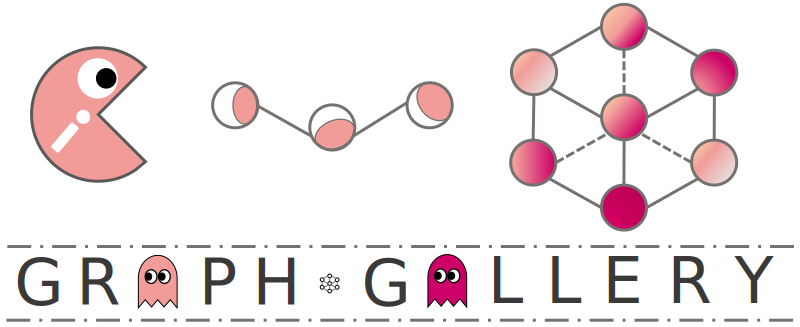

Welcome to GraphGallery’s documentation!¶
GraphGallery is a gallery for benchmarking Graph Neural Networks (GNNs) based on pure PyTorch backend. Alteratively, Pytorch Geometric (PyG) and Deep Graph Library (DGL) backend are also available in GraphGallery to facilitate your implementations.
Installation
Package API¶
Package Reference